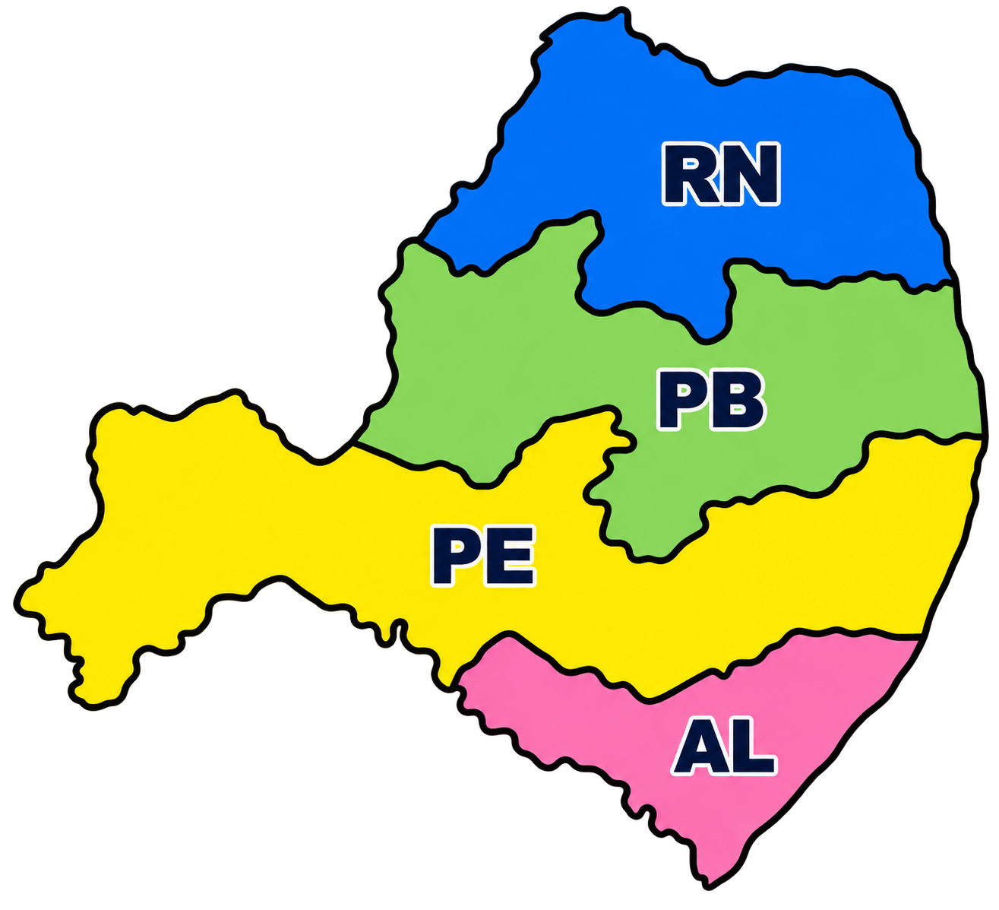

Estrutura Diocesana
GEDs do Nordeste 2
Clique em um estado para conhecer os Grupos Executivos Diocesanos, suas coordenações, contatos e quantidade de setores.
Mapa interativo
Nordeste 2
Escolha um estado no mapa
Clique em AL, PB, PE ou RN para ver os GEDs daquele estado, com coordenação, contatos e quantidade de setores.

GEDs por estado
Alagoas
Carregando...